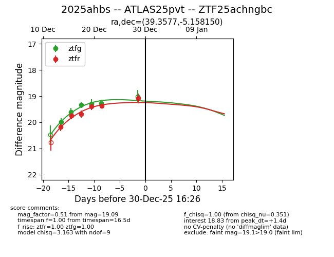
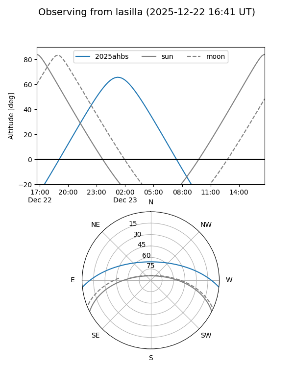
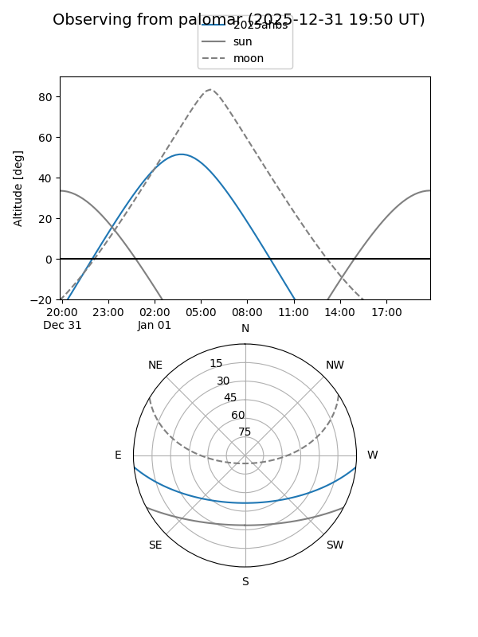
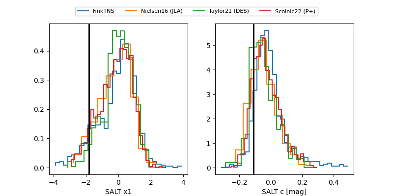

2025ahbs
Target 2025ahbs at 2025-12-18 10:45
Aliases and brokers:
FINK: fink-portal.org/ZTF25achngbc
Lasair: lasair-ztf.lsst.ac.uk/objects/ZTF25achngbc
ALeRCE: alerce.online/object/ZTF25achngbc
TNS: wis-tns.org/object/2025ahbs
YSE: ziggy.ucolick.org/yse/transient_detail/2025ahbs
alt names
ZTF25achngbc (ztf,fink_ztf)
2025ahbs (tns,yse)
Coordinates:
equatorial (ra, dec) = 39.3577,-5.15815
equatorial (HMS+DMS) = 02:37:25.86,-05:09:29.34
galactic (l, b) = (176.6322,-56.53915)
Photometry
last ztfg=19.34, ztfr=19.74
3 ztfg, 2 ztfr detections
Lightcurve

Visibility


Additional plots
